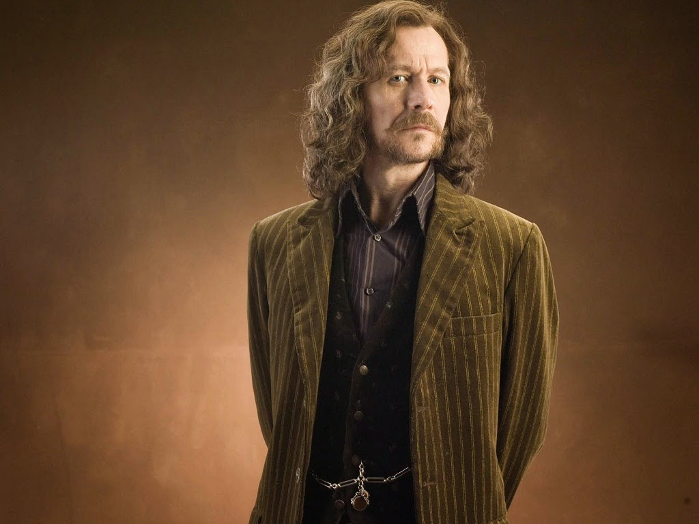

No começo de 1989, a casa de Walburga e Orion Black era tranquila. Tinham a crença de pureza de sangue, que os tornavam super-intolerantes. Em 3 de Setembro deste mesmo ano, nasce Sirius Black, filho do casal bruxo. Sirius cresceu em um ambiente muito conturbado, não tinha apoio de nenhum dos familiares em relação à nada, nem mesmo de seu irmão mais novo, que ao contrário de Sirius, era amado e "idolatrado" por todos de sua família. -Régulos Black, nasceu em 1961, [e morreu em 1979. Régulos era um seguidor de Voldemort, então, sabia de muitas coisas relacionadas à ele, uma dessas coisas lhe despertou o interesse mais à fundo; as horcrux. Régulos percebeu que aquilo não estava certo, tentou seguir o caminho do bem, mas para isso teve que se sacrificar.] Quando Sirius completou onze anos foi convocado para a escola de magia e bruxaria de Hogwarts, logo no trem de embarque ele conheceu James Potter,desde então, ficaram amigos pelo resto da vida. No caminho os dois fizeram amizade com Remus Lupin e Petter Pettigrew. Remus Lupin era bonito, muito inteligente, introvertido e bastante gentil para um lobisomem. Quando criança, Lupin foi infectado com licantropia, o que dificultou muito sua vida social. Mas os marotos o ajudaram muito com isso. Eles até viraram animagos para fazê-lo companhia quando transformado. Petter Pettigrew era um garoto gordinho, baixinho, quietinho e indecifrável. Os três foram selecionados para grifinória, casa "rival" da família de Sirius, mas como bom grifinório, Sirius tinha orgulho de sua casa e suas crenças, não ligava para o julgamento de sua família, e vivia muito feliz em sua segunda casa. Ele era bastante travesso e sempre estava fazendo pegadinhas por hogwarts, ele e James 'viviam' em detenção, pois suas brincadeiras não eram muito bem intencionadas. Em uma delas, os dois decidiram 'encrencar' um colega da sonserina que implicava muito com o quarteto. Sirius fez com que Snape fosse até o final da passagem do salgueiro lutador e encontrasse um lobisomemNo começo de 1989, a casa de Walburga e Orion Black era tranquila. Tinham a crença de pureza de sangue, que os tornavam super-intolerantes. Em 3 de Setembro deste mesmo ano, nasce Sirius Black, filho do casal bruxo. Sirius cresceu em um ambiente muito conturbado, não tinha apoio de nenhum dos familiares em relação à nada, nem mesmo de seu irmão mais novo, que ao contrário de Sirius, era amado e "idolatrado" por todos de sua família. -Régulos Black, nasceu em 1961, [e morreu em 1979. Régulos era um seguidor de Voldemort, então, sabia de muitas coisas relacionadas à ele, uma dessas coisas lhe despertou o interesse mais à fundo; as horcrux. Régulos percebeu que aquilo não estava certo, tentou seguir o caminho do bem, mas para isso teve que se sacrificar.] Quando Sirius completou onze anos foi convocado para a escola de magia e bruxaria de Hogwarts, logo no trem de embarque ele conheceu James Potter,desde então, os dois se tornaram inseparáveis. No caminho os dois fizeram amizade com Remus Lupin e Petter Pettigrew. Remus Lupin era bonito, muito inteligente, introvertido e bastante gentil para um lobisomem. Quando criança, Lupin foi infectado com licantropia, o que dificultou muito sua vida social. Mas os marotos o ajudaram muito com isso. Eles até viraram animagos para fazê-lo companhia quando transformado. Petter Pettigrew era um garoto gordinho, baixinho, quietinho e indecifrável. Os três foram selecionados para grifinória, casa "rival" da família de Sirius, mas como bom grifinório, Sirius tinha orgulho de sua casa e suas crenças, não ligava para o julgamento de sua família, e vivia muito feliz em sua segunda casa. Ele era bastante travesso e sempre estava fazendo pegadinhas por hogwarts, ele e James 'viviam' em detenção, pois suas brincadeiras não eram muito bem intencionadas. Em uma delas, os dois decidiram 'encrencar' um colega da sonserina que implicava muito com o quarteto. Sirius fez com que Snape fosse até o final da passagem do salgueiro lutador e encontrasse um lobisomem ( Lupin) a sua espera. Os anos se passaram e os quatro se tornavam cada vez mais fortes para combater o mal. Enquanto Voldemort estava em sua ascenção, eles treinavam para combatê-lo. Depois de hogwarts eles entraram para a ordem da fênix e fizeram de tudo para proteger os entes queridos. Nessa mesma época Lily (companheira de James e amiga de Sirius) ficou grávida. James não pensou duas vezes e já chamou Sirius para ser padrinho de Harry. Ele ficou tão honrado com tal convite, não havia como recusar. Mas quando Harry acabará de completar um ano, surgiu uma profecia que dizia que o menino que nasceu no dia 31 de Julho, seria o homem que derrotaria Voldemort. Voldemort, sendo um ser muito egoísta, decidiu acabar com isso de uma vez por todas. Ele recebeu informações secretas sobre o esconderijo dos Potter, entrou e matou James que tentou impedí-lo, quando chegou no quarto viu Lily em guarda sobre Harry, ela não cedeu em momento algum, então Voldemort à matou, logo já foi em direção do bebê Harry, mas quando lançou seu feitiço algo inusitado aconteceu, Harry ficou intacto, com apenas uma cicatriz em sua testa, enquanto Voldemort perdeu seus poderes. Entretanto, os Potter usaram um feitiço para se esconder, e o fiel desse segredo, até então, era Sirius. Porém, Sirius sabia que comensais da morte viriam atrás dele, então convenceu os Potter a passar o segredo para Petter. E o mesmo os traiu. Contou a localização para que Voldemort pudesse lhe dar poder, em troca de sua amizade com os marotos. Diante disso, Sirius foi até a casa dos Potter na noite em que descobriu a traição de Petter, quando chegou lá Lily e James já estavam mortos, e o pequeno Harry aos prantos. Sirius, com sangue nos olhos, foi atrás de Pettigrew, que estava na rua em frente a casa, prestes a fugir. Quando conseguiu alcançá-lo, eles entraram em uma batalha, o feitiço de Sirius foi em direção à Petter, mas o traidor se transformou em rato e conseguiu escapar. Mas antes de fugir, ele deixou seu dedo para trás, o mesmo dedo que incriminou Sirius de assasinato. Mas ele teve tempo de levar o pequeno Harry para os cuidados de Hagrid, antes de ser levado a Azkaban. Preso injustamente, Sirius passou doze anos na pior prisão bruxa da Grã-Bretanha. Até que um dia, o ministro da magia resolve visitá-lo, e levou com o ele o profeta diário (jornal bruxo). Na notícia mostrava uma foto dos Weasley no Egito, e no colo do garoto mais novo estava ele, Pettigrew em forma de rato, Sirius o reconheceu pois lhe faltava um dedo, o mesmo dedo em que fora cortado na noite do assassinato. Com a irá em seu corpo, ele consegue escapar da prisão, com o intuito de terminar o que havia começado a doze anos atrás. Ele se transformou em cachorro, passou pelos dementadores, e foi para Hogwarts, onde o animal de estimação de Rony estava. A tentativa de entrar no castelo deu certo, porém, quando chegou a sala comunal da grifinória a passagem não se abriu para ele. Mas ele continuou tentando. Até encontrar Lupin, que estava trabalhando como professor de Defesa Contra as Artes das Trevas. Ele percebeu que Sirius precisava de ajuda, e entendeu no momento em que pegou o mapa do maroto, que Pettigrew não havia morrido nas mãos de Sirius, e sim os Potter haviam morrido na mão de Pettigrew, pois tinha visto Petter vivo, no dormitório da grifinória com Rony. Sirius continuou rondando Hogwarts. Até que em um passeio, Rony levou Pettigrew consigo para o gramado do castelo, junto de Harry e Hermione. Quando de repente, Pettigrew morde Rony e salta de seu colo.